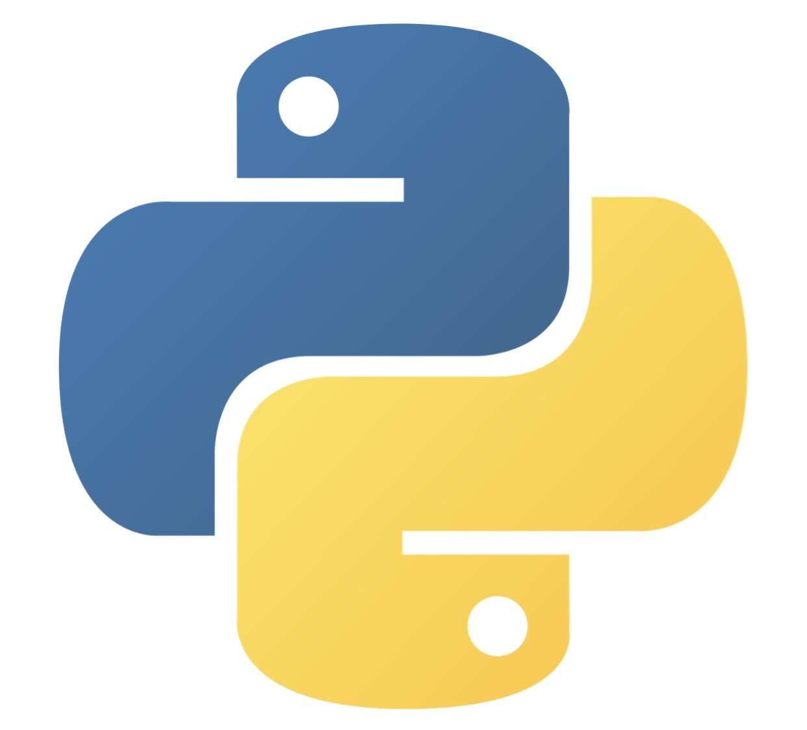
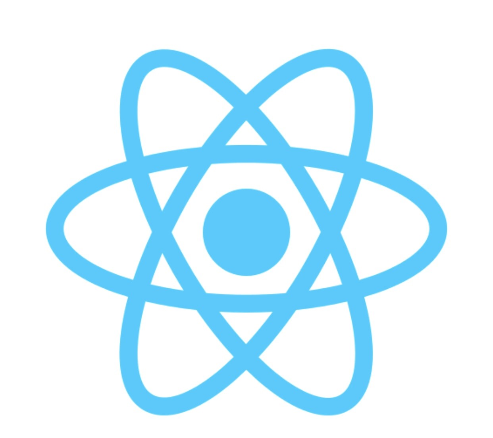
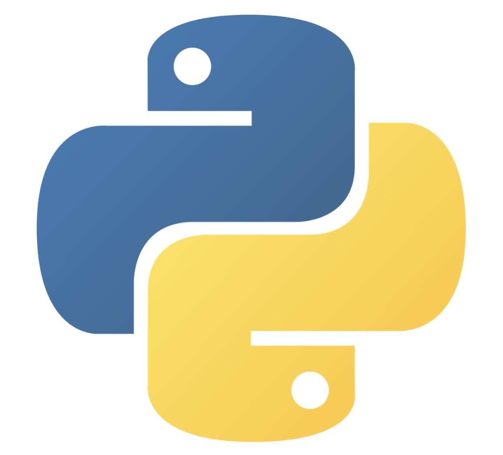
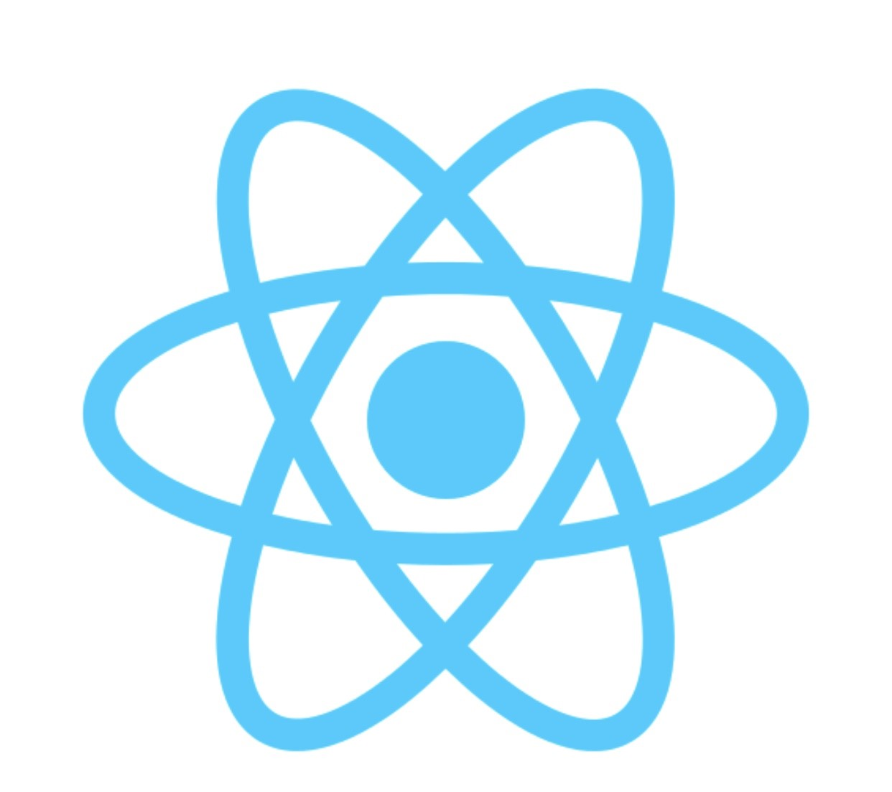
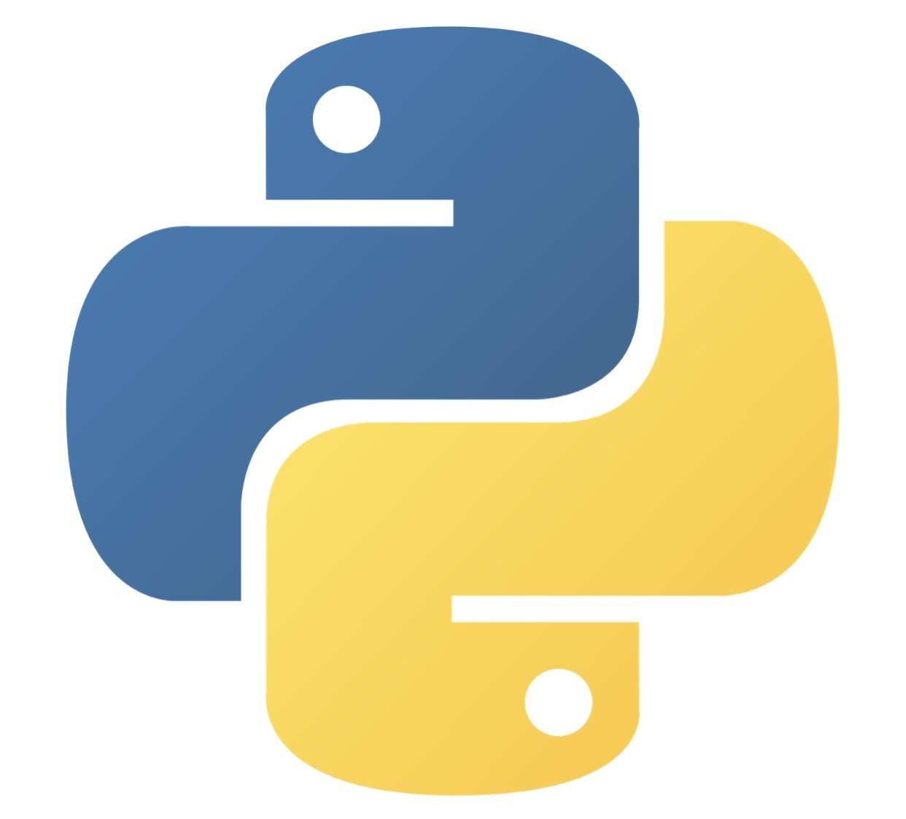
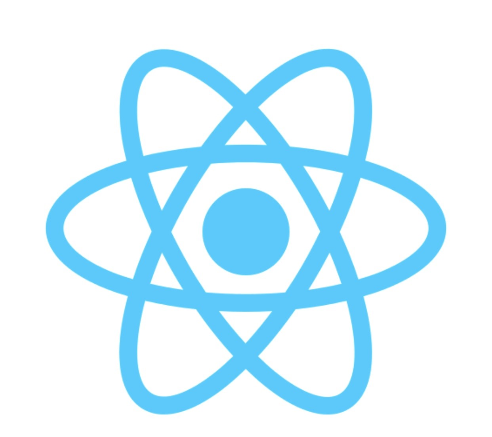

Skills


 





Software Engineer | Geologist
I am a Software Engineer. I am skilled in various technological fields such as Web development, Software Testing, Digital marketing and Technical Documentation. I am passionate, energetic and a well organised developer. I enjoy working in teams and collaborating in delivering meaningful work.


Apart from academics, I was involved in various activities including give-back community programs and problem-solving communities and/or organization that sought to solve real-world problems with user-centered solutions.
Through my four years in high school, I was involved in organizing and facilitating Entrepreneurship club, German events and the National Great Debators Contest.
Frontend Web Development using Angular
Mentoring and learning support to learners in different teams ie Guiding learners and sharing helpful resources. Identifying areas for improvement and Giving learners timely and actionable feedback. Advising learners on adherence to coding standards, tools and workflows. Providing agile product support to dev teams. Giving tech-related advice to program managers.
Femcode Africa is a virtual software company for learning, connecting to clients and development. I analyzed users' needs and did designs, tested and developed Software to meet those needs. Recommended software upgrades for customers' existing programs and systems of clients. Designed each piece of an application/system and planned how the pieces would work together. Developed frontend website architecture. Developed backend website applications for the clients. Ensured cross-platform optimization for mobile phones. Developed servers and databases for functionality. Ensured responsiveness of the applications.
Responsibilities included translating UI/UX design wireframes to actual code that would produce visual elements of the application. Developed new user-facing features. Built reusable code and libraries for future use. Ensured the technical feasibility of UI/UX designs. Optimized application for maximum speed and scalability. Ensured that all user input is validated before submitting to back-end. Collaborated with other team members from different countries .
Planned geology projects (e.g. oil extraction, water pipe construction) and field sampling events. Surveyed sites and created logs (e.g. borehole) and maps using GIS (Surveying). Gathered and analyzed geological data. Coordinated research programs. Examined the composition of samples and specimens using Geochemistry and Mineralogical techniques. Measured and tested fossils, rocks, soil, ores and other material with the proper instruments (e.g. X-rays). Wrote reports on findings. Conducted quality control on the suitability of material (e.g. metals for construction purposes) and inspected projects. Studied sites for developments, formations, hazards, and composition. Investigated and evaluated natural resource deposits (e.g. oil). Consulted on various geology-related issues like waste management, resource management, gas extraction techniques and more. Ensured environmental and other regulations were met in construction and production projects (e.g. oil wells) .